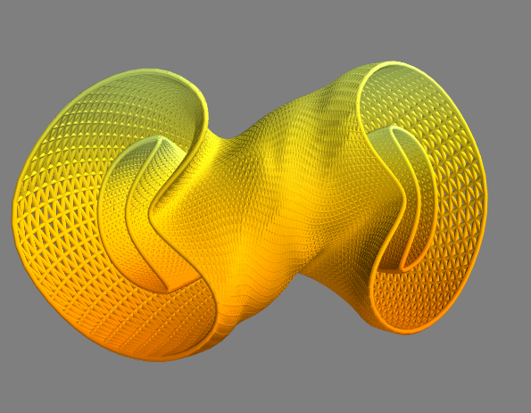

First steps with Stellacode¶
We need some basic import and we will set the current repository to be at the root of the Stellacode folder
[1]:
# Basic import
import os,sys
import numpy as np
# We go up once to exit the example folder
if os.getcwd().split('/')[-1]=='examples':
os.chdir('../')
print('current directory is {}'.format(os.getcwd()))
import numpy as np
# Full_shape_gradient is the main class to compute cost and shape gradient
from src.costs.full_shape_gradient import Full_shape_gradient
# We set the logging level to INFO to have a verbose program
import logging
logging.basicConfig(level=logging.INFO)
current directory is /home/rrobin/Documents/Stellacage_code
Choose a config file¶
Nearly all of the functionalities in Stellacode need a general config file containing most of the simulation parameters. We will use a default one located in stellacode/config_file/config.ini
[2]:
path_config_file='config_file/config.ini'
# We print the config file
with open(path_config_file,'r') as f:
print(f.read())
[geometry]
np = 3
ntheta_plasma = 64
ntheta_coil = 64
nzeta_plasma = 64
nzeta_coil = 64
mpol_coil = 8
ntor_coil = 8
path_plasma = data/li383/plasma_surf.txt
path_cws = data/li383/cws.txt
[other]
path_bnorm = data/li383/bnorm.txt
net_poloidal_current_amperes = 11884578.094260072
net_toroidal_current_amperes = 0.
curpol = 4.9782004309255496
path_output = output_test2
lamb = 1.2e-14
dask = True
cupy = False
[dask_parameters]
chunk_theta_coil=32
chunk_zeta_coil=32
chunk_theta_plasma=32
chunk_zeta_plasma=32
chunk_theta=17
[optimization_parameters]
freq_save=100
max_iter=2000
d_min=True
d_min_hard = 0.18
d_min_soft= 0.19
d_min_penalization=1000
perim=True
perim_c0=56
perim_c1=60
curvature=True
curvature_c0=13
curvature_c1=15
If you do not have much memory on your computer consider using a config file with a smaller resolution.
for e.g.
path_config_file='config_file/config_small.ini'
The Full_shape_gradient object¶
All costs and gradient of a surface are handle by an object Full_shape_gradient. We can initialize one by giving him the path to the config file.
[3]:
full_grad=Full_shape_gradient(path_config_file=path_config_file)
Our object full_grad has two very useful functions : cost and shape_grad. Both need a 1D array parametrizing the CWS to work.
By default, full_grad store the surface parameters of the CWS given by the config file as full_grad.init_param
[4]:
%%time
S_parametrization=full_grad.init_param
# We can compute the cost of this surface
first_cost=full_grad.cost(S_parametrization)
print('the cost of this my CWS is {:.2e}'.format(first_cost))
INFO:root:Chi_B : 1.366275e-01, Chi_j : 1.000214e+14, EM cost : 1.336885e+00
INFO:root:sup j 3.943591e+06, sup B_err : 2.674856e-01
INFO:root:min_distance 1.919394e-01 m, Distance cost : 0.000000e+00
INFO:root:perimeter :5.567741e+01 m^2, perimeter cost : 0.000000e+00
INFO:root:maximal curvature 1.185919e+01 m^-1, curvature cost : 0.000000e+00
INFO:root:Total cost : 1.336885e+00
the cost of this my CWS is 1.34e+00
CPU times: user 16.1 s, sys: 9.56 s, total: 25.7 s
Wall time: 4.33 s
Note that all the ‘constraints costs’ (distance, perimeter, curvature) are zeros because the soft penalization bounds have not been reached.
Thus in particular, this cost should be the same as the one obtained by Regcoil.
The shape gradient¶
Next step is memory expensive (around 10GB is needed) if you have not taken the smaller resolution.
[5]:
%%time
shape_grad=full_grad.shape_gradient(S_parametrization)
CPU times: user 2min 47s, sys: 28.2 s, total: 3min 16s
Wall time: 22.4 s
Let us now perform a numerical gradient to check that our derivation is correct
[6]:
ls=len(S_parametrization) # number of degrees of freedom of the set space
dS_parametrization=2*np.random.random(ls)-np.ones(ls) # a perturbation direction
eps=1e-7
new_cost=full_grad.cost(S_parametrization+eps*dS_parametrization)
finite_difference_evaluation=(new_cost-first_cost)/eps
analytic_gradient=np.dot(shape_grad,dS_parametrization)
print('the finite difference obtained is : {}\n the analytic gradient gives {}'.format(finite_difference_evaluation,analytic_gradient))
INFO:root:Chi_B : 1.366275e-01, Chi_j : 1.000214e+14, EM cost : 1.336885e+00
INFO:root:sup j 3.943601e+06, sup B_err : 2.674854e-01
INFO:root:min_distance 1.919398e-01 m, Distance cost : 0.000000e+00
INFO:root:perimeter :5.567741e+01 m^2, perimeter cost : 0.000000e+00
INFO:root:maximal curvature 1.185931e+01 m^-1, curvature cost : 0.000000e+00
INFO:root:Total cost : 1.336885e+00
the finite difference obtained is : -0.5376960388048246
the analytic gradient gives -0.5379303048997812
Plotting surfaces¶
We use Mayavi for the plotting.
To plot a sequence of surface, just use the plot function from src.surface.surface_Fourier
[7]:
from src.surface.surface_Fourier import Surface_Fourier,plot,plot_function_on_surface
# We generate the surface from the 1D array S_parametrization
CWS=full_grad.get_surface(S_parametrization)# The coil winding surface
plasma_surface=full_grad.EM.Sp # The plasma surface has been saved by full_grad
[8]:
plot([CWS,plasma_surface])
You should see a figure looking like that. You can change the color of the surfaces and the background in the interactive mayavi setup.
